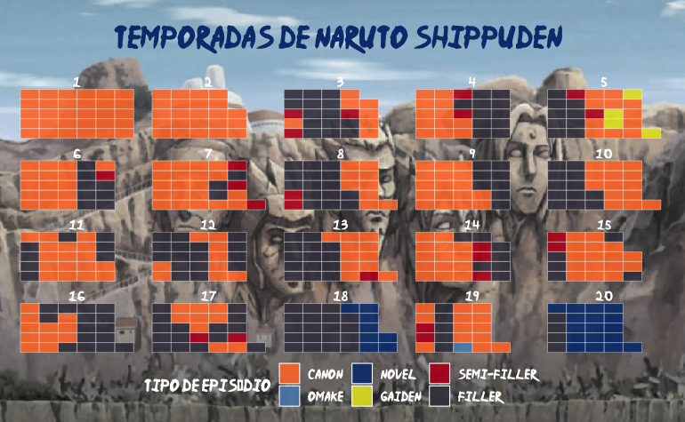
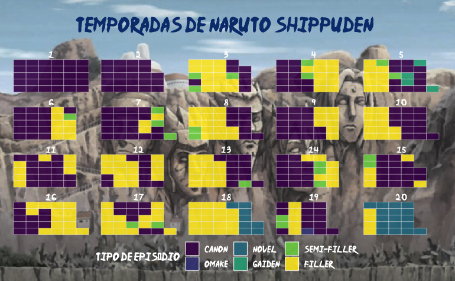

Leia o post no blog da Curso-R: acesse aqui!
Alguns animes tem muitos fillers, que são episódios que não se baseiam na história original, e não agregam na história principal. Muitas vezes parece uma encheção de linguiça mesmo, contendo diversos episódios em sequência que não contribuem com a história que estamos acompanhando.
Naruto é um caso onde existem muuuitos fillers! Então eu pulo esses episódios sem dó, usando a Lista de episódios de Naruto Shippuden disponível no Wikipédia.
O objetivo deste post é apresentar uma forma de importar estes dados para o R, para que a gente não precise acessar toda hora a página do wikipedia consiga fazer uma visualização da distribuição de episódios fillers ao longo dos 500 episódios do anime! Vamos lá, dattebayo!
Coleta de dados com Web Scraping
Vamos usar uma técnica chamada web scraping, que é baseada em raspar informações de páginas de internet. Primeiro, precisamos buscar o código HTML referente à página do Wikipédia que queremos raspar as informações sobre os episódios de Naruto Shippuden:
# Criando um objeto chamado "url_wiki", que contém a url da página do wikipedia
url_wiki <-
"https://pt.wikipedia.org/wiki/Lista_de_epis%C3%B3dios_de_Naruto_Shippuden"
# Lendo o código html referente à página do wikipedia
# E salvando em um objeto chamado wikipedia_html
wikipedia_html <- rvest::read_html(url_wiki)O que o objeto wikipedia_html contém?
wikipedia_html{html_document}
<html class="client-nojs" lang="pt" dir="ltr">
[1] <head>\n<meta http-equiv="Content-Type" content="text/html; charset=UTF-8 ...
[2] <body class="skin-vector skin-vector-search-vue mediawiki ltr sitedir-ltr ...Esse objeto apresenta o código HTML referente à página que queremos raspar!
Buscando informações sobre a primeira temporada
Agora precisamos descobrir como acessar as informações que queremos. Olhando a página, podemos ver que os dados de cada temporada estão apresentados em uma tabela diferente. Vamos tentar primeiramente buscar as informações para a tabela referente à primeira temporada, e quando este código estiver funcionando bem, podemos adaptar o código para buscar os dados das outras temporadas!
Estou utilizando o navegador Google Chrome, e esse navegador tem uma opção que ajuda muito a explorar o código: o inspetor de elementos! Para acessar essa ferramenta, você pode usar o atalho Ctrl + Shift + C, ou clicando no menu superior: “Visualizar” > “Desenvolvedor” > “Inspecionar elementos”. Caso você utilize outro navegador, recomendo que procure o equivalente ao inspetor de elementos deste navegador.
Ao acessar o inspetor de elementos, podemos navegar com o cursor e conseguir visualizar o código equivalente a essa parte da página. Uma forma de localizar conteúdos dentro do HTMl é utilizando o XPath. Na imagem a seguir, é possível ver que selecionei a tabela referente à primeira temporada, e ao apertar o código na área Elements com o botão direito do mouse, é possível copiar o XPath navegando em “Copy” > “Copy XPath”:

O XPath copiado é: //*[@id="mw-content-text"]/div[1]/table[4]. Com isso, podemos acessar os conteúdos da tabela:
# Carregando o pipe do pacote magrittr
library(magrittr, include.only = "%>%")
# Podemos buscar o conteúdo com o xpath,
# e as tabelas que estão presentescom a função html_table()
tabela <- "https://pt.wikipedia.org/wiki/Lista_de_epis%C3%B3dios_de_Naruto_Shippuden" %>%
# ler o html
rvest::read_html() %>%
# buscar o xpath
rvest::html_node(xpath = '//*[@id="mw-content-text"]/div[1]/table[4]') %>%
# ler a tabela
rvest::html_table()Vamos observar essa tabela referente à primeira temporada: ela contém algumas colunas repetidas, e existe mais de uma linha com informações para o mesmo episódio. Será necessário fazer uma leve faxina de dados antes de analisar os dados!
dplyr::glimpse(tabela)Rows: 90
Columns: 5
$ Nº <int> 1, 1, NA, 2, 2, NA, 3, 3, NA, 4, 4, NA, 5, 5,…
$ `Título original` <chr> "Volta para Casa", "帰郷", "", "A Akatsuki se…
$ `Título original` <chr> "Volta para Casa", "Kikyō", "", "A Akatsuki s…
$ `Título(s) em português` <chr> "Voltando Para Casa", "Voltando Para Casa", "…
$ `Data de estreia` <chr> "15 de Fevereiro de 2007", "15 de Fevereiro d…Antes de avançarmos, vamos fazer uma pré-faxina leve: adicionar o número da temporada na base, e transformar o número do episódio em texto (já que a informação se é filler ou não aparece nessa coluna, mas nem todas as temporadas tem fillers - assim padronizamos e evitamos erros posteriormente).
tabela %>%
# limpar os nomes das variáveis
janitor::clean_names() %>%
# adicionando o número da temporada
dplyr::mutate(numero_temporada = 1,
# transforma a variável `no` em texto
no = as.character(no)) %>%
dplyr::glimpse()Rows: 90
Columns: 6
$ no <chr> "1", "1", NA, "2", "2", NA, "3", "3", NA, "4", "…
$ titulo_original <chr> "Volta para Casa", "帰郷", "", "A Akatsuki se Mo…
$ titulo_original_2 <chr> "Volta para Casa", "Kikyō", "", "A Akatsuki se M…
$ titulo_s_em_portugues <chr> "Voltando Para Casa", "Voltando Para Casa", "", …
$ data_de_estreia <chr> "15 de Fevereiro de 2007", "15 de Fevereiro de 2…
$ numero_temporada <dbl> 1, 1, 1, 1, 1, 1, 1, 1, 1, 1, 1, 1, 1, 1, 1, 1, …Já está um pouco mais claro o que a base contém, né?
Buscando informações de todas as temporadas!
Na etapa anterior, conseguimos obter a tabela da primeira temporada. Podemos criar uma função para buscar as informações de outras temporadas também!
Olhando as tabelas das outras temporadas, é possível observar que o XPath segue o mesmo padrão, alterando apenas o número ao final. Isso será um argumento na função, chamado n_tabela. O outro argumento que é interessante adicionar na função é o número da temporada: numero_temporada.
buscar_tabela <- function(n_tabela, numero_temporada) {
# link da página
"https://pt.wikipedia.org/wiki/Lista_de_epis%C3%B3dios_de_Naruto_Shippuden" %>%
# lê o htmo
rvest::read_html() %>%
# procura pelo xpath
rvest::html_node(xpath = glue::glue('//*[@id="mw-content-text"]/div[1]/table[{n_tabela}]')) %>%
# lê a tabela
rvest::html_table() %>%
# limpar os nomes das variáveis
janitor::clean_names() %>%
# adicionando o numero da temporada como uma variavel
# e padronizando o numero do episodio para texto
dplyr::mutate(numero_temporada, no = as.character(no))
}Os números ao final do XPath se iniciam no número 4, e são incrementados de 2 em 2. Portanto, neste caso, os XPath estão organizados dessa forma:
- Temporada 1:
//*[@id="mw-content-text"]/div[1]/table[4] - Temporada 2:
//*[@id="mw-content-text"]/div[1]/table[6] - Temporada 3:
//*[@id="mw-content-text"]/div[1]/table[8] - ……
- Temporada 20:
//*[@id="mw-content-text"]/div[1]/table[42]
Podemos criar uma sequência com a função seq(), para para buscar todas as tabelas de uma vez, sendo que a sequência deve começar no número 4, e incrementar de 2 em 2, até o número 42, formando um vetor de 20 números (referente às 20 temporadas).
Podemos usar a função purrr::map2_dfr() para aplicar a função buscar_tabela() para buscar as informações das tabelas de todas as temporadas, e unir em uma única base.
tabela_bruta <-
purrr::map2_dfr(.x = seq(from = 4, to = 42, by = 2),
# A sequencia começa em 4 e vai até 42, contando de 2 em 2.
# assim teremos um vetor com 20 números, referente às
# 20 temporadas! Isso será usado no primeiro argumento
# da função buscar_tabela, ou seja,
# no argumento `n_tabela`.
.y = 1:20, # isso será usado no segundo argumento
# da funcao buscar_tabela, ou seja,
# no argumento `numero_temporada`.
.f = buscar_tabela # função que queremos utilizar
)Faxina
Conseguimos baixar tudo e salvar em uma única base: tabela_bruta, porém essa base precisa ser limpa. Vamos tentar descobrir os problemas? A função dplyr::glimpse() é útil para dar uma olhada na base:
dplyr::glimpse(tabela_bruta)Rows: 1,500
Columns: 6
$ no <chr> "1", "1", NA, "2", "2", NA, "3", "3", NA, "4", "…
$ titulo_original <chr> "Volta para Casa", "帰郷", "", "A Akatsuki se Mo…
$ titulo_original_2 <chr> "Volta para Casa", "Kikyō", "", "A Akatsuki se M…
$ titulo_s_em_portugues <chr> "Voltando Para Casa", "Voltando Para Casa", "", …
$ data_de_estreia <chr> "15 de Fevereiro de 2007", "15 de Fevereiro de 2…
$ numero_temporada <int> 1, 1, 1, 1, 1, 1, 1, 1, 1, 1, 1, 1, 1, 1, 1, 1, …Vamos então listar os problemas para arrumar e deixar a base tidy:
Tem variáveis que estão duplicadas, como o título do episódio;
A data de estreia do episódio está como tipo texto;
A informação se o episódio é filler está contido na variável do número do episódio;
Queremos apenas uma linha por episódio;
Vamos então fazer uma faxina nessa base, e deixar ela tidy! Vamos começar tentando resolver os itens 1 à 3:
tabela_faxinando <- tabela_bruta %>%
# separar a coluna `no` em: `numero_episodio` e `tipo_episodio`
tidyr::separate(no, into = c("numero_episodio", "tipo_episodio"), "\\(", extra = "merge") %>%
dplyr::mutate(
# transformar a variavel `numero_episodio` em tipo numérico
numero_episodio = readr::parse_number(numero_episodio),
# remover o parenteses desnecessário na variável tipo_episodio
tipo_episodio = stringr::str_replace_all(tipo_episodio, "\\)", ""),
# Na variavel `tipo_episodio`, quando está vazio é porque faz
# parte da história principal (é chamado de Canônico).
# Então vamos usar dplyr::case_when() para arrumar essa variável.
tipo_episodio = dplyr::case_when(
is.na(tipo_episodio) ~ "Canon",
tipo_episodio == "½filler" ~ "Semi-filler",
TRUE ~ tipo_episodio
),
# transformar a variavel `data_de_estreia` em tipo data
data_de_estreia = readr::parse_date(
data_de_estreia,
format = "%d de %B de %Y",
locale = readr::locale("pt")
)
) %>%
# remover colunas repetidas do titulo do episodio
dplyr::select(-titulo_original, -titulo_original_2) %>%
# renomeia para deixar o nome da variável mais claro
dplyr::rename("titulo_episodio" = titulo_s_em_portugues) %>%
# move a coluna numero_temporada para o inicio
dplyr::relocate(numero_temporada, .before = numero_episodio)Arrumamos algumas coisas já, e a tabela está bem melhor: não tem mais variáveis duplicadas, os nomes das variáveis estão padronizados, as classes das variáveis também estão adequadas:
dplyr::glimpse(tabela_faxinando)Rows: 1,500
Columns: 5
$ numero_temporada <int> 1, 1, 1, 1, 1, 1, 1, 1, 1, 1, 1, 1, 1, 1, 1, 1, 1, 1,…
$ numero_episodio <dbl> 1, 1, NA, 2, 2, NA, 3, 3, NA, 4, 4, NA, 5, 5, NA, 6, …
$ tipo_episodio <chr> "Canon", "Canon", "Canon", "Canon", "Canon", "Canon",…
$ titulo_episodio <chr> "Voltando Para Casa", "Voltando Para Casa", "", "Os A…
$ data_de_estreia <date> 2007-02-15, 2007-02-15, NA, 2007-02-15, 2007-02-15, …Agora vamos arrumar algo muito importante: queremos que cada linha represente um episódio único.
episodios_naruto_shippuden <- tabela_faxinando %>%
# remover os NA`s presentes na coluna `numero_episodio`
tidyr::drop_na(numero_episodio) %>%
# aqui teremos duas linhas por episódio, sendo que elas estão repetidas.
# a função dplyr::distinct() permitirá descartar as linhas repetidas
dplyr::distinct()Pronto! Agora temos na tabela apenas uma linha por episódio. Podemos verificar isso com o dplyr::glimpse() novamente: a série tem 500 episódios, e a base gerada contém 500 linhas.
dplyr::glimpse(episodios_naruto_shippuden)Rows: 500
Columns: 5
$ numero_temporada <int> 1, 1, 1, 1, 1, 1, 1, 1, 1, 1, 1, 1, 1, 1, 1, 1, 1, 1,…
$ numero_episodio <dbl> 1, 2, 3, 4, 5, 6, 7, 8, 9, 10, 11, 12, 13, 14, 15, 16…
$ tipo_episodio <chr> "Canon", "Canon", "Canon", "Canon", "Canon", "Canon",…
$ titulo_episodio <chr> "Voltando Para Casa", "Os Akatsuki Entram em Ação", "…
$ data_de_estreia <date> 2007-02-15, 2007-02-15, 2007-02-22, 2007-03-01, 2007…Além disso, conseguimos conferir a quantidade de episódios filler:
episodios_naruto_shippuden %>%
dplyr::count(tipo_episodio, sort = TRUE) %>%
knitr::kable(col.names = c("Tipo de episódio", "Número de episódios"))| Tipo de episódio | Número de episódios |
|---|---|
| Canon | 259 |
| Filler | 188 |
| Novel | 25 |
| Semi-filler | 23 |
| Gaiden | 4 |
| Omake | 1 |
Visualização
Agora que já temos a base arrumada, podemos fazer uma visualização para descobrir a distribuição de episódios fillers no anime. A visualização abaixo está separada por temporada, sendo que a ordem dos episódios no gráfico é: inicia no canto inferior esquerdo, e sobe em direção ao canto superior esquerdo.
# Criando a paleta de cores para usar
paleta <- c("#fe7934",
"#5b8cb9",
"#083b7c",
"#e1e020",
"#ba1820",
"#403e4b")
# O pacote que disponibiliza a função ggwaffle é:
# devtools::install_github("hrbrmstr/waffle")
# Criando a visualização:
grafico <- episodios_naruto_shippuden %>%
dplyr::count(numero_temporada, numero_episodio, tipo_episodio) %>%
dplyr::mutate(tipo_episodio = forcats::fct_relevel(
tipo_episodio,
c("Canon", "Omake", "Novel", "Gaiden", "Semi-filler", "Filler")
)) %>%
ggplot2::ggplot(ggplot2::aes(fill = tipo_episodio, values = n)) +
waffle::geom_waffle(
n_rows = 5,
color = "white",
show.legend = TRUE,
alpha = 0.9
) +
ggplot2::facet_wrap( ~ numero_temporada) +
ggplot2::theme_void() +
ggplot2::scale_fill_manual(values = paleta) +
ggplot2::labs(fill = "Tipo de episódio",
title = "Temporadas de Naruto Shippuden \n") +
ggplot2::theme(
text = ggplot2::element_text(family = "Ninja Naruto", color = "white"),
plot.margin = ggplot2::margin(.5, .5, .5, .5, "cm"),
plot.title = ggplot2::element_text(
hjust = 0.5,
size = 20,
color = paleta[3]
),
legend.position = "bottom"
)
# Imagem que usaremos de fundo
imagem <-
"https://uploaddeimagens.com.br/images/003/256/849/full/Monumento_dos_Hokage.jpg?1621801239"
# Colocando uma imagem de fundo
ggimage::ggbackground(gg = grafico,
background = imagem)
Edit: Comentaram que a paleta de cores não facilitou a visualização para pessoas daltônicas, então fiz uma versão com a paleta viridis (obrigada Luiz Paulo Carvalho!):
grafico_viridis <- grafico +
ggplot2::scale_fill_viridis_d()
ggimage::ggbackground(gg = grafico_viridis,
background = imagem)
As únicas temporadas livres de fillers são a primeira e a segunda! Depois de concluir essas temporadas é importante ficar de olho na lista para não acabar assistindo os episódios de enrolação.
Conclusão
Espero que esse post tenha sido interessante, e seja útil para quem não quer perder tempo com fillers quem deseja obter algum conteúdo do Wikipédia de forma mais fácil!
Tchau! Até a próxima!